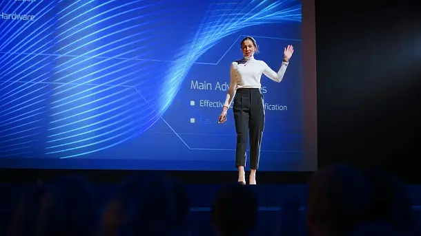

Системы отображения информации
Базирующиеся на различных технологиях устройства, объединенные общей целью – донести до отдельных пользователей или для собравшейся аудитории в целом какую-либо визуальную информацию. К таким системам относятся, например, проекторы и проекционные экраны, жидкокристаллические и светодиодные дисплеи, видеостены.
Выбрать формат